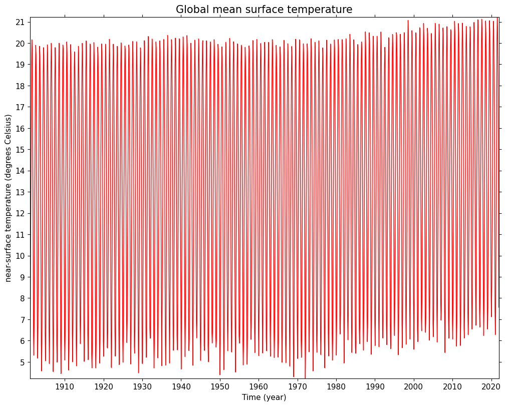

Print the desciption of near surface temperature using the dump method to show properties of all constructs:
>>> temp.dump()-----------------------------------------------------Field: long_name=near-surface temperature (ncvar%tmp)-----------------------------------------------------Conventions = 'CF-1.4'_FillValue = 9.96921e+36comment = 'Access to these data is available to any registered CEDA user.'contact = 'support@ceda.ac.uk'correlation_decay_distance = 1200.0history = 'Fri 29 Apr 14:35:01 BST 2022 : User f098 : Program makegridsauto.for called by update.for'institution = 'Data held at British Atmospheric Data Centre, RAL, UK.'long_name = 'near-surface temperature'missing_value = 9.96921e+36references = 'Information on the data is available at http://badc.nerc.ac.uk/data/cru/'source = 'Run ID = 2204291347. Data generated from:tmp.2204291209.dtb'title = 'CRU TS4.06 Mean Temperature'units = 'degrees Celsius'Data(long_name=time(1452), long_name=latitude(360), long_name=longitude(720)) = [[[--, ..., --]]] degrees CelsiusDomain Axis: long_name=latitude(360)Domain Axis: long_name=longitude(720)Domain Axis: long_name=time(1452)Dimension coordinate: long_name=time calendar = 'gregorian' long_name = 'time' units = 'days since 1900-1-1' Data(long_name=time(1452)) = [1901-01-16 00:00:00, ..., 2021-12-16 00:00:00] gregorianDimension coordinate: long_name=latitude long_name = 'latitude' units = 'degrees_north' Data(long_name=latitude(360)) = [-89.75, ..., 89.75] degrees_northDimension coordinate: long_name=longitude long_name = 'longitude' units = 'degrees_east' Data(long_name=longitude(720)) = [-179.75, ..., 179.75] degrees_east
Latitude and longitude dimension coordinate cell bounds are absent, but they can be created using create_bounds and set using set_bounds:
Time dimension coordinate cell bounds are similarly created and set for cell sizes of one calendar month:
>>> time=temp.coordinate('long_name=time')>>> c=time.create_bounds(cellsize=cf.M())>>> time.set_bounds(c)>>> time.dump()Dimension coordinate: long_name=time calendar = 'gregorian' long_name = 'time' units = 'days since 1900-1-1' Data(1452) = [1901-01-16 00:00:00, ..., 2021-12-16 00:00:00] gregorian Bounds:calendar = 'gregorian' Bounds:units = 'days since 1900-1-1' Bounds:Data(1452, 2) = [[1901-01-01 00:00:00, ..., 2022-01-01 00:00:00]] gregorian
Calculate and plot the area weighted mean surface temperature for each time using the collapse method:
>>> global_avg=temp.collapse('area: mean',weights=True)>>> cfp.lineplot(global_avg,color='red',title='Global mean surface temperature')

9. Calculate and plot the annual global mean surface temperature using cfplot.lineplot:
>>> annual_global_avg=global_avg.collapse('T: mean',group=cf.Y())>>> cfp.lineplot(annual_global_avg,... color='red',title='Annual global mean surface temperature')
The temperature values are averaged for the climatological period of 1961-1990 by defining a subspace within these years using cf.wi query instance over subspace and doing a statistical collapse with the collapse method:
2. The temperature anomaly is then calculated by subtracting these climatological temperature values from the annual global average temperatures and plotting them using lineplot:
>>> temp_anomaly=annual_global_avg-temp_clim>>> cfp.lineplot(temp_anomaly,... color='red',... title='Global Average Temperature Anomaly (1901-2021)',... ylabel='1961-1990 climatology difference ',... yunits='degree Celcius')
In this recipe, we will regrid two different datasets with different resolutions. An example use case could be one where the observational dataset with a higher resolution needs to be regridded to that of the model dataset so that they can be compared with each other.
Plot the wind vectors on top of precipitation data for June 1995 by creating a subspace (subspace) with a date-time object (cf.dt) and using cfplot.con. Here cfplot.gopen is used to define the parts of the plot area, which is closed by cfplot.gclose; cfplot.cscale is used to choose one of the colour maps amongst many available; cfplot.levs is used to set the contour levels for precipitation data; and cfplot.vect is used to plot the wind vectors for June 1995: